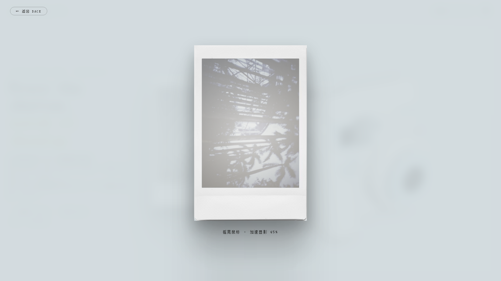

instax 拍立得 · AI 滤镜 + 反即时满足
以富士 instax mini 7c 为原型的互动拍立得网页，将显影等待设计为体验的一部分。



背景
主流滤镜应用普遍追求即时反馈与高度可编辑性，削弱了拍立得"仅此一张、等待显影"的仪式感；同时，AI 滤镜多为黑盒，用户难以理解参数来源。本项目以富士 instax mini 7c 为原型，面向偏好复古胶片审美的用户，将显影等待设计为体验的一部分，并将 AI 能力转化为可解释、可微调的调色工具。
功能
- 3D 相机按下快门输出相纸
- 相纸拖入取景框后 90 秒显影，摇晃鼠标最多可三倍加速
- 输入相机型号，AI 联网检索该机型的发色特征，生成 7 个可微调的滤镜参数
- 无 API Key 时亦可通过内置预生成滤镜卡体验
- 收藏墙与模板管理，单文件构建、双击即开
关键决策
- 显影设定为 90 秒且不可跳过，摇晃鼠标最多三倍加速，将等待本身作为拍立得体验的情感锚点。
- AI 能力定位于相机型号到滤镜参数的映射：用户输入具有文化共识的相机型号，AI 联网检索该机型发色特征，输出 7 个可解释、可微调的参数。
- 模型输出经 JSON 与参数范围校验，越界值无法进入界面，保证稳定性。
- 无 API Key 时提供三张预生成滤镜卡与默认滤镜，保证体验链路完整。
- 调色在拍摄前烘焙为新底图，显影、收藏、画廊等下游模块无需改动。
技术
纯前端零后端，Three.js + Canvas 2D + localStorage，DeepSeek 联网搜索，单文件构建。
复盘
Safari 不支持 Canvas 的 ctx.filter，调色烘焙降级为手写颜色矩阵逐像素处理。后续将优先补充数据埋点，将体验评价转化为量化指标。
← 返回总览